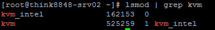
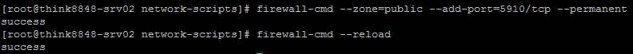
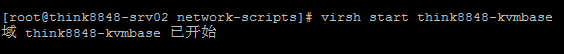
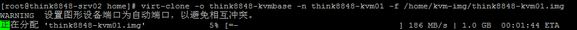
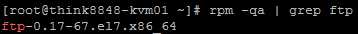
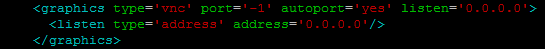
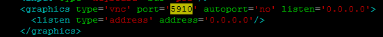

CentOS7.2部署KVM虚拟机
学习了关于PostGis、OSM数据以及Mapnik相关内容，接下来将利用假期重点学习PostgreSQL-XL和瓦片服务器集群技术，因此先把环境搭好。计划采用KVM来充分利用家里不太宽裕的“服务器”资源，以便实现弹性计算:)
CentOS版本：64位 7.2 1511
一、安装KVM
1. 验证CPU是否支持KVM；如果结果中有vmx（Intel）或svm(AMD)字样，就说明CPU的支持的。
egrep '(vmx|svm)' /proc/cpuinfo
2. 关闭SELinux，将 /etc/sysconfig/selinux 中的 SELinux=enforcing 修改为 SELinux=disabled
3. 最小安装的CentOS安装一些最基本的包（可选项，因为我是刚安装好的CentOS，所以为了下面方便点，先把一些必要的工具安装下）
yum install epel-release net-tools vim unzip zip wget ftp -y
4. 安装KVM及其依赖项
yum install qemu-kvm libvirt virt-install bridge-utils -y
5. 验证安装结果，下图说明已经成功安装了
lsmod | grep kvm

6. 开启kvm服务，并且设置其开机自动启动
systemctl start libvirtd systemctl enable libvirtd
7. 查看状态操作结果,如下图所示，说明运行情况良好
systemctl status libvirtd systemctl is-enabled libvirtd
8. 配置网桥模式，先将 /etc/sysconfig/network-scripts/ 目录下的网卡配置文件备份一份(不要备在当前目录以及子目录下，其他目录随意)
a. 创建 ifcfg-br0 文件，内容如下：
BOOTPROTO=static DEVICE=br0 TYPE=Bridge NM_CONTROLLED=no IPADDR=192.168.1.95 NETMASK=255.255.255.0 GATEWAY=192.168.1.1 DNS1=61.177.7.1 DNS2=8.8.8.8
b. 移除掉原来的 ifcfg-enp0s25 ,重新创建该文件，内容如下：
BOOTPROTO=none DEVICE=enp0s25 NM_CONTROLLED=no ONBOOT=yes BRIDGE=br0
c. 重启网络服务
systemctl restart network
使用 ifconfig 验证操作结果,多了一块网卡br0，现在访问 think8848-srv02 使用 192.168.1.95 就可以了。
二、安装虚拟机
1. 准备操作系统安装镜像文件，在本文中将使用和宿主环境一样的CentOS7.2，把该文件放到 /home/iso 目录下

2. 创建虚拟机文件存放的目录
mkdir -p /home/kvm-bak
3. 使用 virt-install 创建虚拟机
virt-install -n think8848-kvmbase -r 2048 --disk /home/kvm-bak/think8848-kvmbase.img,format=qcow2,size=20 --network bridge=br0 --os-type=linux --os-variant=rhel7.2 --cdrom /home/iso/CentOS-7-x86_64-DVD-1511.iso --vnc --vncport=5910 --vnclisten=0.0.0.0
操作结果显示：
不要理会里面提示的错误，接着往下走
4. 打开防火墙上的5910端口
firewall-cmd --zone=public --add-port=5910/tcp --permanent firewall-cmd --reload

5. 使用VNC连接该虚拟机，进行虚拟机操作系统的安装，直接到VNC官网上下载最新版的VNC Viewer即可
a. VNC Viewer
b. 新建连接，提供宿主IP、端口号(在virt-install创建过程中指定的)，以及名称
c. 在Expert页签中，将ColorLevel的值由原来的 pal8 修改为 rgb222 ，点击OK按钮保存
d. 如果你像我一样，边操作边还在做笔记，等你双击连接的名称后，安装界面都准备好了
接下来就安装CentOS吧，过程略。
6. 安装完CentOS，系统要求重启，这时候虚拟机没有重启(也不知是因为什么问题)，VNC也连不上，先在宿主机上查看虚拟机状态，显示think8848-kvmbase为关闭状态
virsh list --all
7. 手动启动虚拟机
virsh start think8848-kvmbase

再次使用VNC连接，发现已经可以连进去了
三、简单配置KVM虚拟机
1. 网桥配置，这里值得一提的是，如果你在虚拟机中安装CentOS过程中，配置了合适的网格参数，那么这时虚拟机里应该就可以使用网络了。如果当时就采用系统安装包的默认参数，未启用网卡，那么此时你需要启动虚拟机的网卡，先看下虚拟机网卡的配置文件列表，貌似和普通电脑安装没啥区别，网卡的配置文件是 ifcfg-eth0
再查看 ifcfg-eth0配置文件，和普通电脑安装的也没啥区别，按照要求呢，貌似在一些文章中介绍，说需要添加一行配置 NM_CONTROLLED=no ，我没添加也没发现有什么问题。
2. 配置在宿主端登录虚拟机shell。当然在宿主端也是可以通过SSH登录，但是直接登录貌似也是一个不错的方式。这个配置主要有两个步骤：
a. 编辑 /etc/default/grub 文件，对照如下：
编辑前：
编辑后：
文本内容：
GRUB_DISTRIBUTOR="$(sed 's, release .*$,,g' /etc/system-release)" GRUB_DEFAULT=saved GRUB_DISABLE_SUBMENU=true GRUB_TERMINAL="console serial" GRUB_SERIAL_COMMAND="serial --speed=115200 --unit=0 --word=8 --parity=no --stop=1" GRUB_CMDLINE_LINUX="rd.lvm.lv=centos/root rd.lvm.lv=centos/swap rhgb" GRUB_CMDLINE_LINUX_DEFAULT="console=tty1 console=ttyS0,115200" GRUB_DISABLE_RECOVERY="true"
b. 运行下面一行的代码
grub2-mkconfig -o /boot/grub2/grub.cfg
c. 重启虚拟机 reboot
d. 在宿主机上进入虚拟机控制台，想退出时使用 Ctrl 键+ ] （左方括号）键退出。
virsh console think8848-kvmbase
四、迁移虚拟机
虚拟机建好后，最大的好处就是任由我们折腾，而不用担心重装系统的麻烦。所以一定要知道虚拟机怎么复制迁移，这里有两种情况，一种是本机上镜像复制，另一种是将本机镜像迁移到其他服务器上，本节参考自这里，感谢koumm。
1. 本机复制
a. 先关闭虚拟机
virsh shutdown think8848-kvmbase
b. 在 /home 下新建文件夹 /home/kvm-img
mkdir -p /home/kvm-img
c. 使用 virt-clone 克隆think8848-kvmbase为新的虚拟机
virt-clone -o think8848-kvmbase -n think8848-kvm01 -f /home/kvm-img/think8848-kvm01.img

克隆完成
使用 virsh list --all 查看
d. 开启think8848-kvm01，然后修改IP地址、主机名
virsh start think8848-kvm01 virsh console think8848-kvm01 #等虚拟机启动好后，用root登录 hostname think8848-kvm01 #编辑/etc/hostname文件，修改主机名为think8848-kvm01 vi /etc/hostname #编辑/etc/sysconfig/network-scripts/ifcfg-eth0，修改IPADDR
e. reboot 重启虚拟机，重启后刚才修改的内容已经生效了。
2. 将虚拟机镜像迁移到其他服务器上
a. 先将虚拟机的配置文件和镜像文件放到合适的位置(我搭了一台FTP服务器，方便测试时所有的文件传输，如下图所示)
b. 现在到服务器转战到think8848-srv01(IP:192.168.1.96)，刚才虚拟机是在think8848-srv02（IP:192.168.1.95）上创建的。以下所有操作均是在think8848-srv01上进行的
c. 将ftp上的think8848-kvm01.img放到/home/kvm-img目录，将think8848-kvm01.xml放到/etc/libvirt/qemu目录中
d. 编辑think8848-kvm02.xml，将里面所有think8848-kvm01替换为think8848-kvm02，然后把UUID换为新的(直接使用这个在线工具生成吧)
e. 定义新虚拟机
virsh define /etc/libvirt/qemu/think8848-kvm02.xml
图中think8848-kvm01是我之前在宿主机中配置的虚拟机，恰好名称与之前的重复了。我在think8848-kvm01上没有安装ftp客户端，在新迁移的虚拟机里面安装了ftp，可以利用这个包验证虚拟机是否正确

OK,说明没有问题
f. 现在是时候再给新的虚拟机指定新主机名和IP了。刚才是我们重启生效的，这次我们不要重启了，先使用 systemctl restart network 使新IP生效，然后再 exit 注销用户使主机名生效，就可以了。
最后一个问题，如果在克隆或迁移后想使用VNC连接，那就需要重新指定VNC的端口号，将 /etc/libvirt/qemu/think8848-kvm02.xml 中的VNC端口号修改你需要的值即可。


五、KVM管理
可以参考：虚拟化之KVM virsh常用命令篇 http://www.linuxidc.com/Linux/2017-01/139993.htm
在Ubuntu上安装KVM并搭建虚拟环境 http://www.linuxidc.com/Linux/2015-10/123788.htm
KVM中Linux虚拟机的硬盘添加方法 http://www.linuxidc.com/Linux/2013-02/80067.htm
Linux入门学习教程：虚拟机体验之KVM篇 http://www.linuxidc.com/Linux/2015-03/114462.htm
RHEL6 KVM虚拟化创建桥接网卡-网桥 http://www.linuxidc.com/Linux/2013-08/88517.htm
RedHat Linux KVM虚拟机桥接 http://www.linuxidc.com/Linux/2013-02/79934.htm
CentOS 5.6下KVM的安装/桥接设置/虚拟机创建及运行 http://www.linuxidc.com/Linux/2012-12/76883.htm
Ubuntu下用libvirt安装KVM虚拟机时找不到/bin/qemu-kvm问题解决 http://www.linuxidc.com/Linux/2013-08/88985.htm
RedHat6.5下安装配置KVM虚拟机 http://www.linuxidc.com/Linux/2014-10/107972.htm